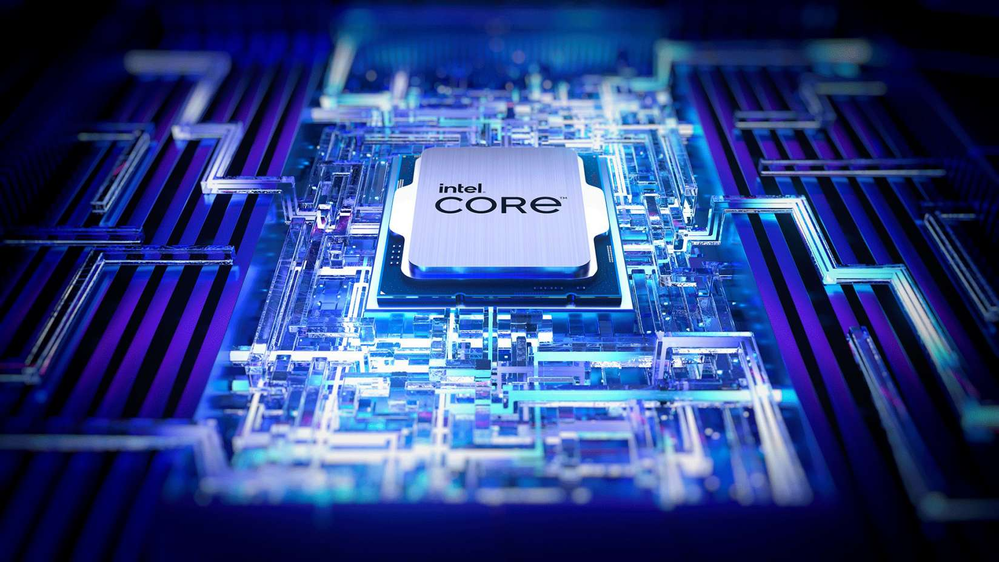

Processador
O componente responsável por executar instruções, realizar cálculos e coordenar operações.
O processador é um microchip especializado. Ele recebe instruções, processa dados e executa operações de acordo com os programas armazenados na memória. Por isso, é uma parte fundamental da unidade central de processamento, a CPU.

Principais características
- Executa instruções dos programas.
- Realiza cálculos e operações lógicas.
- Trabalha em conjunto com memória e armazenamento.
- Possui características como núcleos, frequência e arquitetura.